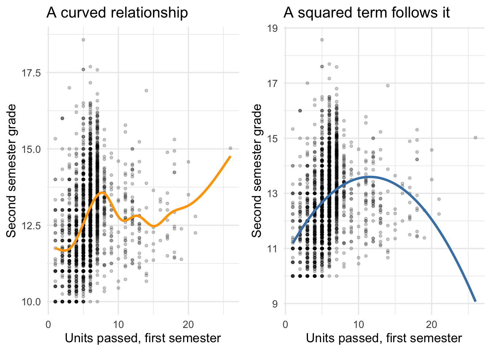
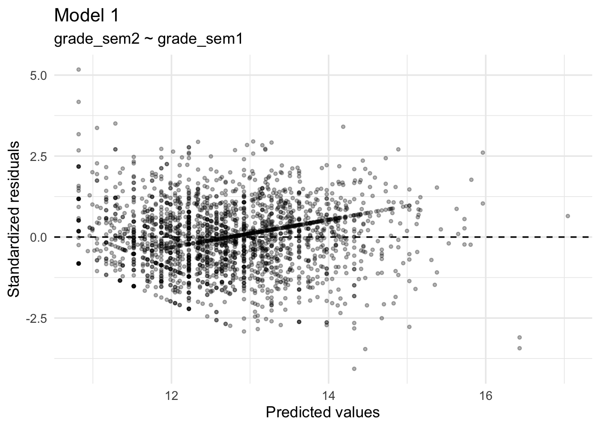
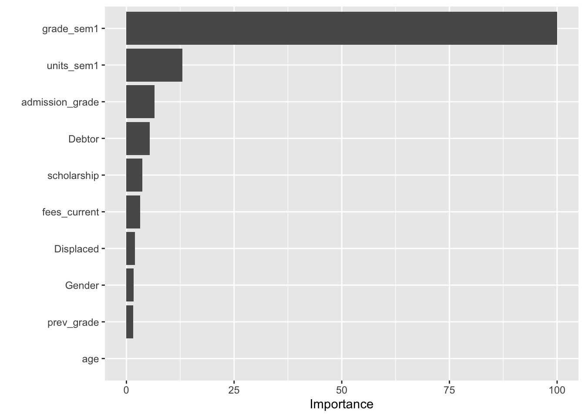

library(dplyr) # data manipulation and the pipe
library(ggplot2) # plots
library(caret) # train() for fitting and cross validation
library(rsample) # splitting
library(vip) # variable importance plotsMultiple Linear Regression
Simple Linear Regression predicted second semester grade from a single predictor. This page adds more predictors. Adding predictors never makes the fit to the training data worse, so the question is whether the model predicts better.
Setup
We continue with the student dropout data from the previous page. If you did not build it there, download dropout.csv.
dropout <- read.csv("data/dropout.csv", sep = ";") %>%
rename(
grade_sem1 = Curricular.units.1st.sem..grade.,
grade_sem2 = Curricular.units.2nd.sem..grade.,
units_sem1 = Curricular.units.1st.sem..approved.,
admission_grade = Admission.grade,
prev_grade = Previous.qualification..grade.,
age = Age.at.enrollment,
scholarship = Scholarship.holder,
fees_current = Tuition.fees.up.to.date
)
# Same decision as the previous page: keep students who completed units,
# so the model is not just separating completers from non-completers
completers <- dropout %>% filter(grade_sem1 > 0, grade_sem2 > 0)
nrow(completers)[1] 3512Overview of Multiple Linear Regression
Multiple linear regression extends the simple linear regression framework to include more than one predictor:
- more than one feature (also called the predictors or independent variables),
- one target (also called the outcome or dependent variable).
It models the relationship between a single outcome \(Y_i\) and multiple predictors \(X_{1i}, X_{2i}, \dots, X_{pi}\) for each observation \(i = 1, \dots, n\).
The Model
\[ Y_i = \beta_0 + \beta_1 X_{1i} + \beta_2 X_{2i} + \dots + \beta_p X_{pi} + \varepsilon_i \]
where:
- \(Y_i\): the outcome for observation \(i\).
- \(X_{ji}\): the value of predictor \(j\) for observation \(i\).
- \(\beta_0\): the intercept, the expected value of \(Y_i\) when all \(X_{ji} = 0\).
- \(\beta_j\): the coefficient for predictor \(X_{ji}\), the expected change in \(Y_i\) for a one unit increase in \(X_{ji}\), holding all other predictors constant.
- \(\varepsilon_i\): the error term, capturing variation not explained by the predictors.
Estimating the Model
The coefficients are estimated by ordinary least squares, which chooses the values minimizing the residual sum of squares:
\[ \text{RSS} = \sum_{i=1}^n (y_i - \hat{y}_i)^2 \]
This is the same loss function idea from the previous page. Nothing about the learning procedure changes when you add predictors. There are simply more coefficients to search over.
Implementation in R
Predictors are joined with + on the right hand side of the formula.
fit_mlr <- lm(grade_sem2 ~ grade_sem1 + admission_grade, data = completers)
coef(fit_mlr) (Intercept) grade_sem1 admission_grade
3.220254141 0.674053933 0.007326894 Interpreting Coefficients
Each \(\beta_j\) reflects the unique contribution of its predictor, after adjusting for the others.
b <- coef(fit_mlr)- The intercept, 3.22, is the predicted second semester grade for a student with a first semester grade of 0 and an admission grade of 0. Neither is possible, so treat it as the number the equation needs rather than a claim about any student.
- The coefficient on
grade_sem1, 0.674, is the predicted change in second semester grade for a one point increase in first semester grade, holding admission grade constant. - The coefficient on
admission_grade, 0.007, is the predicted change for a one point increase in admission grade, holding first semester grade constant.
Admission grade on its own is related to second semester grade, but much of what it tells you is already contained in the first semester grade. Its coefficient reports only what it adds.
Interactions
An interaction occurs when the effect of one predictor depends on the level of another. In other words, one variable is moderated by another.
\[ Y_i = \beta_0 + \beta_1 X_{1i} + \beta_2 X_{2i} + \beta_3 (X_{1i} \cdot X_{2i}) + \varepsilon_i \]
where \(\beta_3\) captures the interaction, and \((X_{1i} \cdot X_{2i})\) is the product of the two predictors. If \(\beta_3 \neq 0\), the effect of \(X_1\) on \(Y\) changes depending on \(X_2\).
Without an interaction, the model assumes each predictor contributes independently, which may oversimplify reality.
# The colon creates the product term
fit_interaction <- lm(
grade_sem2 ~ grade_sem1 + admission_grade + grade_sem1:admission_grade,
data = completers
)
coef(fit_interaction) (Intercept) grade_sem1
6.701053190 0.405048615
admission_grade grade_sem1:admission_grade
-0.019620445 0.002074745 Assessing Model Accuracy
In this course the goal is prediction, so we return to the splitting and cross validation framework from the pipeline unit.
set.seed(123)
split <- initial_split(completers, prop = 0.7, strata = "grade_sem2")
train <- training(split)
test <- testing(split)
c(train = nrow(train), test = nrow(test))train test
2456 1056 # 10 fold cross validation, used identically for every model below so the
# comparison between them is fair
ctrl <- trainControl(method = "cv", number = 10)We compare four models of increasing complexity.
Model 1: One Predictor
set.seed(123)
cv_model1 <- train(grade_sem2 ~ grade_sem1,
data = train, method = "lm", trControl = ctrl)
cv_model1$results intercept RMSE Rsquared MAE RMSESD RsquaredSD MAESD
1 TRUE 1.001326 0.4687573 0.7747505 0.06912821 0.06065019 0.05120965The cross validated RMSE is 1.001. Read it as: on students it has not seen, this model’s predictions are off by about 1 grade points on average.
Model 2: Adding Admission Grade
set.seed(123)
cv_model2 <- train(grade_sem2 ~ grade_sem1 + admission_grade,
data = train, method = "lm", trControl = ctrl)
cv_model2$results intercept RMSE Rsquared MAE RMSESD RsquaredSD MAESD
1 TRUE 0.9966571 0.4739103 0.7712225 0.06950671 0.06109953 0.05054241RMSE is now 0.997, an improvement of about 0.005 grade points.
Model 3: Adding the Interaction
set.seed(123)
cv_model3 <- train(grade_sem2 ~ grade_sem1 + admission_grade + grade_sem1:admission_grade,
data = train, method = "lm", trControl = ctrl)RMSE 0.996.
Model 4: Ten Predictors
set.seed(123)
cv_model4 <- train(
grade_sem2 ~ grade_sem1 + admission_grade + prev_grade + age + scholarship +
fees_current + units_sem1 + Gender + Debtor + Displaced,
data = train, method = "lm", trControl = ctrl
)RMSE 0.988.
Comparing Them on the Same Folds
summary(resamples(list(
model1 = cv_model1,
model2 = cv_model2,
model3 = cv_model3,
model4 = cv_model4
)))$statistics$RMSE Min. 1st Qu. Median Mean 3rd Qu. Max. NA's
model1 0.8545284 0.9746804 0.9945510 1.0013263 1.053863 1.100659 0
model2 0.8526973 0.9660374 0.9902438 0.9966571 1.050061 1.097337 0
model3 0.8588772 0.9626406 0.9881579 0.9956393 1.047992 1.090997 0
model4 0.8482726 0.9454881 0.9843184 0.9875899 1.043208 1.081534 0Model Concerns
Linear regression is widely used largely because its coefficients are easy to interpret. But it relies on several strong assumptions, and those assumptions are violated more often as predictors accumulate. Violations can produce biased estimates, misleading interpretations, and poor predictions.
Linearity
The model assumes the change in the outcome for a one unit change in a predictor is constant across the whole range of that predictor. Many real relationships are not like that.
Number of units passed in the first semester is a good example.
p1 <- ggplot(train, aes(units_sem1, grade_sem2)) +
geom_point(size = 1, alpha = .2) +
geom_smooth(se = FALSE, color = "orange") +
labs(x = "Units passed, first semester", y = "Second semester grade",
title = "A curved relationship") +
theme_minimal(base_size = 13)
p2 <- ggplot(train, aes(units_sem1, grade_sem2)) +
geom_point(size = 1, alpha = .2) +
geom_smooth(method = "lm", formula = y ~ x + I(x^2), se = FALSE, color = "steelblue") +
labs(x = "Units passed, first semester", y = "Second semester grade",
title = "A squared term follows it") +
theme_minimal(base_size = 13)
gridExtra::grid.arrange(p1, p2, nrow = 1)
A straight line through the left panel would underfit badly. Adding a squared term roughly doubles the variance this predictor accounts for:
c(
linear = summary(lm(grade_sem2 ~ units_sem1, data = train))$r.squared,
quadratic = summary(lm(grade_sem2 ~ units_sem1 + I(units_sem1^2), data = train))$r.squared
) linear quadratic
0.05954114 0.12027644 Transformations of the predictors, or of the outcome, are often enough to make a relationship approximately linear. The model is still a linear model, because it remains linear in its coefficients.
Heteroskedasticity
Heteroskedasticity means the variance of the errors is not constant across levels of the predictors, violating the homoscedasticity assumption.
df1 <- broom::augment(cv_model1$finalModel, data = train)
ggplot(df1, aes(.fitted, .std.resid)) +
geom_point(size = 1, alpha = .3) +
geom_hline(yintercept = 0, linetype = "dashed") +
labs(x = "Predicted values", y = "Standardized residuals",
title = "Model 1", subtitle = "grade_sem2 ~ grade_sem1") +
theme_minimal(base_size = 13)
Look for a funnel shape, where the spread of residuals widens or narrows systematically as predictions get larger. Remedies include transforming the outcome or using robust standard errors.
Heteroskedasticity mainly affects inference, because the standard errors and p values covered in Inference in Linear Regression assume constant variance. The predictions can still be accurate.
Autocorrelation
Autocorrelation occurs when residuals are correlated with each other, violating the independence assumption. It underestimates standard errors and produces overly optimistic p values. It matters most with a time component or with repeated measures on the same people. Each row here is a different student measured once, so we do not pursue it, though it becomes important with intensive longitudinal data.
Feature Importance
The vip() function (Variable Importance Plots) visualizes the relative importance of predictors. It accepts any fitted model object, including lm(), glm(), random forests, and boosted trees.
For linear models, vip() ranks predictors by the absolute value of their t statistics.
vip(cv_model4, num_features = 10, method = "model")
Next: Simple Logistic Regression, which keeps this dataset and changes the outcome from a grade to a category.